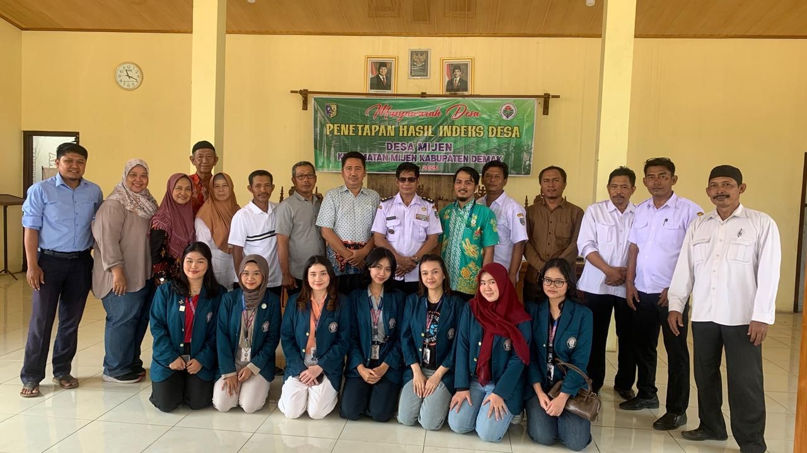
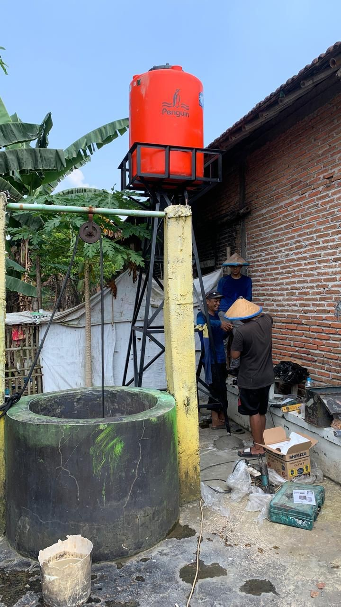
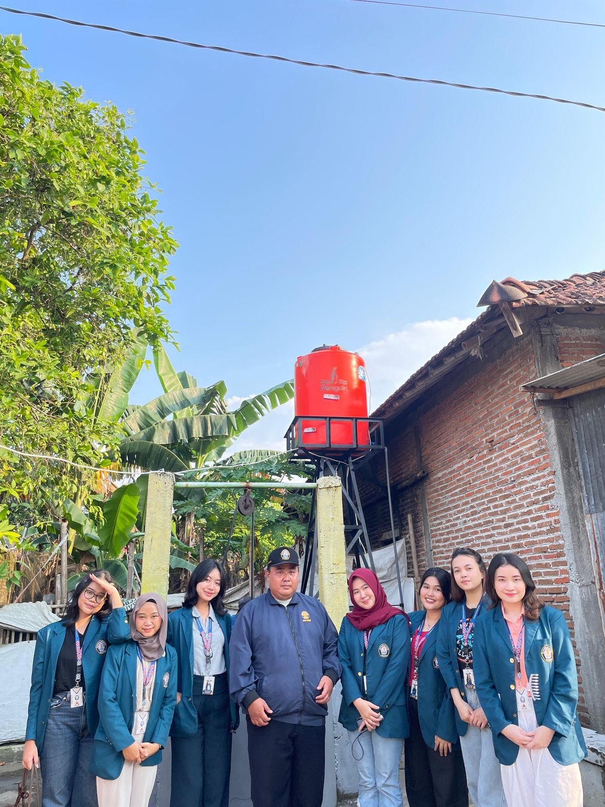

Laporan dan pembaruan terkini tentang kegiatan pemberdayaan masyarakat di Desa Mijen.


Demak – Musim kemarau 2025 membawa harapan baru bagi Desa Mijen, Kecamatan Mijen. Sekelompok mahasiswa dari tim KKNT 152 Universitas Diponegoro (UNDIP) yang sedang menjalani di Desa Mijen bergerak cepat menjawab persoalan tersebut. Dengan dibimbing oleh Dr. Berlian Arshwendo Adietya, S.T., M.T., Dr Nikken Prima Puspita, S.Si., Nurhasmadiar Nandini, S.KM., M.Kes. mengusung program multidisiplin bertema pengurangan risiko bencana kekeringan guna menghadapi musim kemarau yang akan datang.
Baca Selengkapnya
Setelah melakukan analisis situasi bersama perangkat desa dan warga, tim KKN memutuskan untuk membangun sebuah tandon air berkapasitas 650 liter. Tandon ini dilengkapi pompa otomatis berbahan stainless steel dan ditopang struktur setinggi tiga meter. Lokasinya dipilih strategis, berada di RT II RW III, dekat dengan sumur umum pusat pemukiman warga. Dengan keberadaan tandon ini, warga kini memiliki akses lebih stabil terhadap air bersih, bahkan di tengah musim kering. Dengan semangat kolaboratif dan aksi berbasis data, mahasiswa UNDIP telah menunjukkan bahwa perubahan bisa dimulai dari langkah kecil namun berdampak besar. Bagi warga Desa Mijen, toren air yang kini berdiri kokoh bukan sekadar infrastruktur, ia adalah simbol harapan di tengah terik yang tak kunjung reda.
Baca Selengkapnya